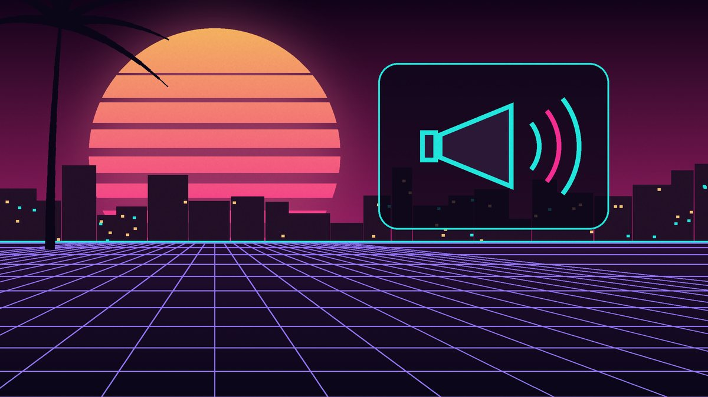

Sam Houser habla en el estreno de GTA 6: «hemos intentado crear una experiencia que supere vuestras expectativas»
El presidente y cofundador de Rockstar, que casi nunca da declaraciones, mandó un texto a un medio mientras el juego se desbloqueaba por regiones. Resumimos lo que dice, con sus frases más claras citadas y atribuidas, y lo único que deja claro sobre el final de la historia.
Por Redacción Golpe Diario · Publicado el

Qué ha pasado
Quién habla y por dónde. Sam Houser es presidente y cofundador de Rockstar Games, productor ejecutivo de GTA 6 y casi nunca aparece en público. Este mensaje tampoco salió por el Newswire, la página de anuncios de la empresa: RockstarINTEL cuenta que el texto se facilitó a GamesRadar+, que lo publicó el 18 de noviembre, mientras el juego se iba desbloqueando en unas regiones antes que en otras. MIXED News recuerda que el despliegue es por regiones y que la disponibilidad depende de dónde y cómo hayas comprado el juego.
Cómo empieza. Houser recuerda que Rockstar nació con la convicción de que los videojuegos pueden alcanzar la misma categoría que cualquier otra forma de contar historias, volverse esenciales en la cultura moderna y quedarse con nosotros como relatos y mundos. Es una declaración de principios, no un anuncio.
Sobre el juego. Dice que Grand Theft Auto vuelve a Leonida y a un Vice City actual, que ha pasado el tiempo y que, aun así, el equipo ha intentado crear «una experiencia que supere vuestras expectativas» y que a la vez enseñe de lo que es capaz el medio.
Para quién. Tanto si llegas tras recorrer toda la saga como si es tu primer juego de la serie, lo presenta como una historia en un mundo lleno de posibilidades, en el que te toca a ti darle forma. Espera que resulte «a la vez familiar y totalmente nuevo» y, sobre todo, que te diviertas. Cierra con el deseo de compartir «muchos años más» de estas experiencias, según RockstarINTEL y MIXED News.
Un segundo mensaje, tras el estreno. Cuando la empresa dio las cifras de la primera jornada, Fox Business recogió que Houser volvió a hablar: dijo que Rockstar se siente muy honrada por la respuesta de los jugadores de todo el mundo. Las cifras del estreno son un asunto aparte.
Lo único que dice del final. La frase sobre darle forma a cómo acaba la historia es una declaración de intenciones, no una confirmación de cuántos finales hay ni de cómo se llega a ellos. Si ves un vídeo que la usa como prueba de un número concreto de finales, está estirando una frase que no dice tanto.
Qué significa para ti
- No busques esta declaración en la web de Rockstar: según RockstarINTEL se facilitó a un medio y no consta en el Newswire.
- La parte que te afecta jugando es la del final: Houser dice que lo decides tú, y no da ni un detalle más.
- El texto no menciona la versión de PC ni la parte en línea. Si alguien te lo cita como prueba de una fecha, no está ahí.
- Para leer el mensaje original en inglés tienes abajo los enlaces a GamesRadar+ y a RockstarINTEL.
Contrastado con: GamesRadar+ · RockstarINTEL · Fox Business · MIXED News
Sigue leyendo
Rockstar explica cómo ha construido a cada vecino de Leonida para que no parezca un maniquí
Una entrevista de IGN a varios responsables de Rockstar North, recogida por otros medios especializados, destapa el trabajo que hay detrás de la gente que se cruza por la calle en GTA 6: más animaciones que en cualquier otro juego de la saga, un equipo dedicado solo a sus vidas y una norma que obliga a cada uno a tener su propia historia, aunque el jugador no la vea nunca entera.
3.790 millones de dólares el primer día: qué cifras del estreno de GTA 6 son oficiales y cuáles son estimaciones
Rockstar y Take-Two anunciaron 3.790 millones de dólares de gasto el día del estreno y 32,5 millones de unidades vendidas antes de salir. Por su lado, la consultora Sensor Tower calculó 24,58 millones de copias y 2.360 millones. No se contradicen, porque no miden lo mismo, y ninguna de las dos es una cifra auditada.
Ni dardos ni bolos en GTA 6: Rockstar explica por qué se quedaron fuera
Rob Nelson, productor del juego y codirector de Rockstar North, dice que el estudio no tiene tiempo ni dinero infinitos y que prefiere dejar una actividad fuera antes que meterla a medias. Billar, pesas y baloncesto sí están.